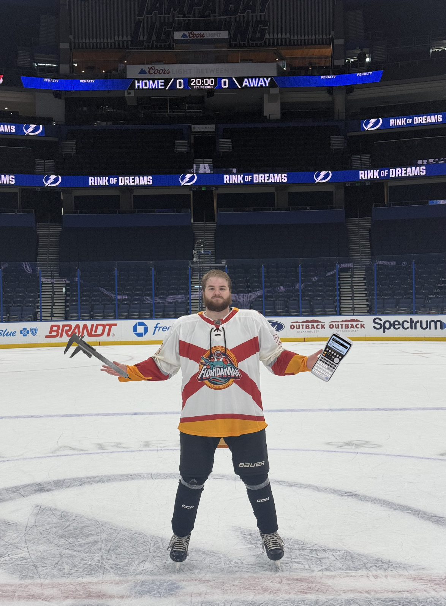

Aaron Havener
Mechanical Engineering Graduate — Robotics, Controls & Mechanical Design
About Me
I'm a recent Mechanical Engineering graduate from Florida State University with interests spanning dynamic systems and controls as well as mechanical design. On the controls and robotics side, I enjoy taking a project from first-principles dynamics all the way through to a working, tested system — whether that's deriving a controller in MATLAB, designing a mechanism in SolidWorks, or getting a robot to navigate a room on its own.
On the mechanical design side, I have a strong interest in machine design, mechanical systems, and the full design process from concept to hardware. I'm especially drawn to roles where I get to design and CAD a part, validate it with FEA/CFD simulation, and carry it through to drawings and both static and dynamic assemblies.
During my internship at Whiting-Turner, I worked on the construction side of large-scale projects, reviewing engineering drawings, coordinating with subcontractors, and performing interference checks between mechanical, electrical, and plumbing systems. Outside of coursework and internships, I've built several independent robotics and controls projects, including an educational CVT-driven robot, an autonomous LiDAR-guided mobile robot, and a simulated nonlinear feedback control system.
I'm currently looking for an entry-level mechanical engineering role or internship where I can apply my background in design, analysis, and controls to real hardware problems.

Quick Facts
Education
B.S. Mechanical Engineering, Florida State University (May 2025)
CAD
SolidWorks, Creo
Programming
MATLAB, Python, C, C++
Analysis
ANSYS (FEA, CFD), COMSOL Multiphysics
Controls & Robotics
Feedback control, Simulink, path planning, inverse kinematics
Manufacturing
FDM 3D printing, rapid prototyping